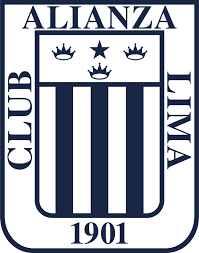
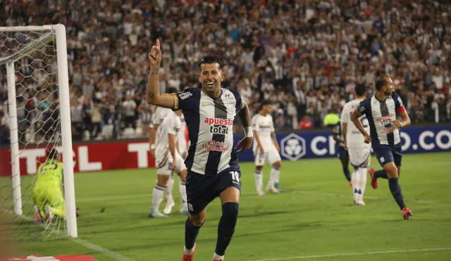

El equipo representa el esfuerzo colectivo, donde cada jugador aporta su talento para defender los colores del club. La hinchada acompaña siempre, creando un ambiente unico que impulsa al equipo en cada partido.
Alianza Lima no es solo un club de futbol, es una institucion historica que forma parte de la identidad del Peru. Fundado en 1901, es uno de los equipos mas antiguos y representativos del pais, con una historia llena de esfuerzo, pasion y orgullo que ha marcado generaciones enteras de hinchas.

El escudo de Alianza Lima representa mucho mas que un simple simbolo. Sus colores azul y blanco reflejan la elegancia y la tradicion del club. A lo largo del tiempo, este emblema ha acompañado al equipo en sus mayores logros y tambien en los momentos mas dificiles, demostrando siempre la grandeza de su historia.
A lo largo de los años, Alianza Lima ha sido protagonista del futbol peruano, conquistando numerosos titulos y formando jugadores que dejaron huella. Su estilo de juego, su garra y su compromiso dentro de la cancha lo convierten en un equipo respetado tanto a nivel nacional como internacional.
El equipo representa el esfuerzo colectivo, donde cada jugador aporta su talento para defender los colores del club. La hinchada acompaña siempre, creando un ambiente unico que impulsa al equipo en cada partido.
El estadio es el lugar donde toda esta historia cobra vida. Cada partido es una muestra de la pasion de sus seguidores, que llenan las tribunas con cantos y energia. Alianza Lima no es solo futbol, es sentimiento, es historia y es una de las instituciones mas grandes del Peru.

En este estadio se han vivido momentos inolvidables que quedaron marcados en la memoria de los hinchas. Es el escenario donde se celebra la gloria y donde se fortalece el amor por el club.